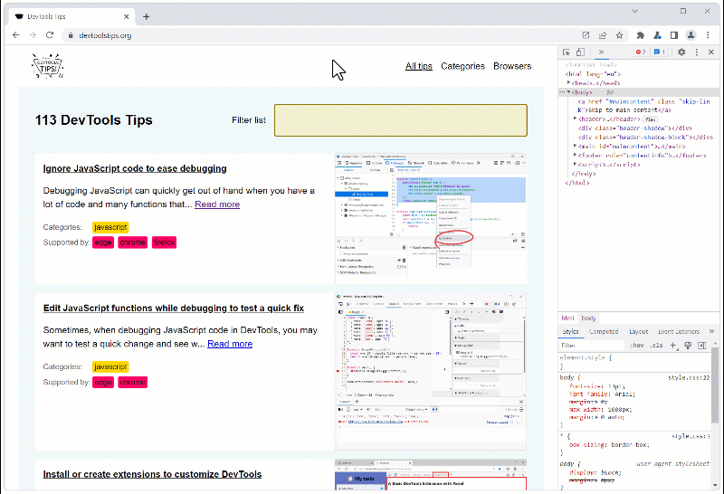

Help us make DevTools Tips better! Fill out this survey to tell us more about your DevTools habits and frustrations.
-
Find all elements with a specific style
 Let's say you want to list all of the elements on a page that are absolutely positioned. Or maybe yo... Read more
Let's say you want to list all of the elements on a page that are absolutely positioned. Or maybe yo... Read more -
Debug your print CSS styles by simulating print media
 If you work on a webpage that's supposed to be printed, you probably want to test your print CSS sty... Read more
If you work on a webpage that's supposed to be printed, you probably want to test your print CSS sty... Read more -
Find broken links
 The link to X on page Y doesn't work is probably a bug report you've received at some point. But how... Read moreCategories: Supported by:
The link to X on page Y doesn't work is probably a bug report you've received at some point. But how... Read moreCategories: Supported by: -
Emulate color schemes
 In CSS, you can use the prefers-color-scheme media feature (docs) to detect if the user prefers usin... Read more
In CSS, you can use the prefers-color-scheme media feature (docs) to detect if the user prefers usin... Read more -
Simulate multiple devices that are kept in sync
 Instead of simulating devices one by one and switching between them, Polypane supports testing on mu... Read moreCategories: Supported by:
Instead of simulating devices one by one and switching between them, Polypane supports testing on mu... Read moreCategories: Supported by: -
Show web vitals
 Web vitals are a set of metrics that help you determine how well-built your page is. You can learn m... Read moreCategories: Supported by:
Web vitals are a set of metrics that help you determine how well-built your page is. You can learn m... Read moreCategories: Supported by: -
Autofill forms for testing
 In Polypane you can right-click any form on the page and select Autofill form to add dummy values to... Read moreCategories: Supported by:
In Polypane you can right-click any form on the page and select Autofill form to add dummy values to... Read moreCategories: Supported by: -
Test your PWA protocol handlers
 Progressive Web Apps (PWA) can register themselves to handle URIs with pre-defined or custom protoco... Read more
Progressive Web Apps (PWA) can register themselves to handle URIs with pre-defined or custom protoco... Read more -
Emulate idle detection states
 The Idle Detection API is useful for web developers to detect when the user isn't interacting with t... Read moreCategories: Supported by:
The Idle Detection API is useful for web developers to detect when the user isn't interacting with t... Read moreCategories: Supported by: -
Simulate different devices and screen sizes

There is a great mode in all major browser developer tools that makes it really easy to test your we... Read more
-
Simulate a different latitude/longitude geolocation
 If your website has features that depend on the geographic location of your users, you can test thes... Read more
If your website has features that depend on the geographic location of your users, you can test thes... Read more -
Copy an element's JavaScript path
 JavaScript often needs references to DOM nodes on the page. Getting a reference is sometimes easy wi... Read more
JavaScript often needs references to DOM nodes on the page. Getting a reference is sometimes easy wi... Read more -
Empty the cache and hard refresh
 Here is a nice tip to quickly empty your cache and refresh the page, in order to test new code chang... Read more
Here is a nice tip to quickly empty your cache and refresh the page, in order to test new code chang... Read more -
Create your own simulated devices
 You can simulate various different devices from DevTools, to get an idea of how your webpage might r... Read more
You can simulate various different devices from DevTools, to get an idea of how your webpage might r... Read more -
Use document.designMode to spell check your webpage
 Amelia Bellamy-Royds shared a really cool tip to spell-check a webpage's content from DevTools: Ope... Read more
Amelia Bellamy-Royds shared a really cool tip to spell-check a webpage's content from DevTools: Ope... Read more -
Automatically get issues your site has with performance, accessibility, security, compatibility, and others.
 Edge has a very useful Issues panel that can automatically list a lot of different issues with your... Read moreCategories: Supported by:
Edge has a very useful Issues panel that can automatically list a lot of different issues with your... Read moreCategories: Supported by: -
Start your HTML and CSS prototypes in the browser directly
 Sometimes I need a blank canvas to prototype an idea with HTML and CSS. Something outside of the web... Read more
Sometimes I need a blank canvas to prototype an idea with HTML and CSS. Something outside of the web... Read more -
Use full browser window for device emulation
 Emulating different devices in the browser is incredibly useful. It gets tricky when you are on a de... Read more
Emulating different devices in the browser is incredibly useful. It gets tricky when you are on a de... Read more -
Record and replay user flows
 Have you ever had to test the same user scenario again and again while working on a fix or performan... Read moreCategories: Supported by:
Have you ever had to test the same user scenario again and again while working on a fix or performan... Read moreCategories: Supported by: -
Evaluate XPath to find elements in the page
 DevTools supports 2 ways to evaluate XPath expressions to help you locate elements in the page. All... Read more
DevTools supports 2 ways to evaluate XPath expressions to help you locate elements in the page. All... Read more -
Block resources to test your site without CSS or JavaScript
 The various resources loaded by your site aren't always guaranteed to reach your users when they vis... Read more
The various resources loaded by your site aren't always guaranteed to reach your users when they vis... Read more -
Copy an element's XPath expression
 You can easily copy an element's XPath expression from DevTools. This is useful if you need this exp... Read more
You can easily copy an element's XPath expression from DevTools. This is useful if you need this exp... Read more